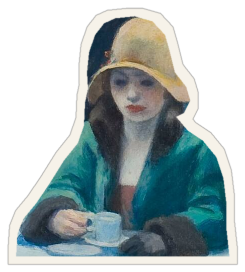

Te tropezás en la vereda.
¿Quién me vio?
Edward Hopper · Nighthawks, 1942
Antes de fijarte si te lastimaste, mirás alrededor.
Cuatro personas.
Ninguna mira para afuera.
En este cuadro de Hopper hay cuatro personas. Ninguna mira para afuera.
¿Cuántos notaron la remera ridícula?
Efecto reflector · Gilovich, Medvec y Savitsky, 2000
Ellos calcularon que la había notado la mitad. La notó un cuarto.

Saberlo no alcanza.
Hopper · Automat, 1927
Porque la mirada que más pesa no está en la sala.
No hay nadie.
Y sin embargo, algo mira.
Antes de poder mirarnos,
alguien nos miró.
Berthe Morisot · La cuna, 1872
Un bebé descubre que existe en una cara que se inclina sobre él.
si todavía hay alguien ahí que nos mira
como aquella vez.
Si todavía hay alguien ahí que nos mira como aquella vez.
Newsletter semanal · gratis
El Reflejo
Cada semana, algo de la cultura para pensar lo que nos pasa.
Link en la bio